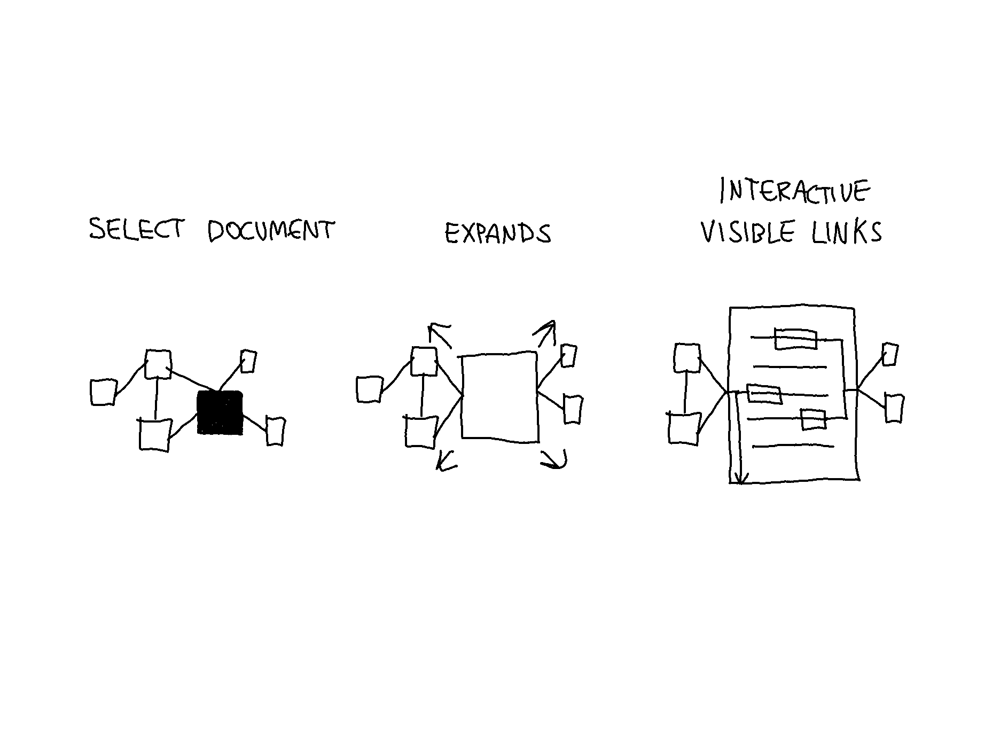
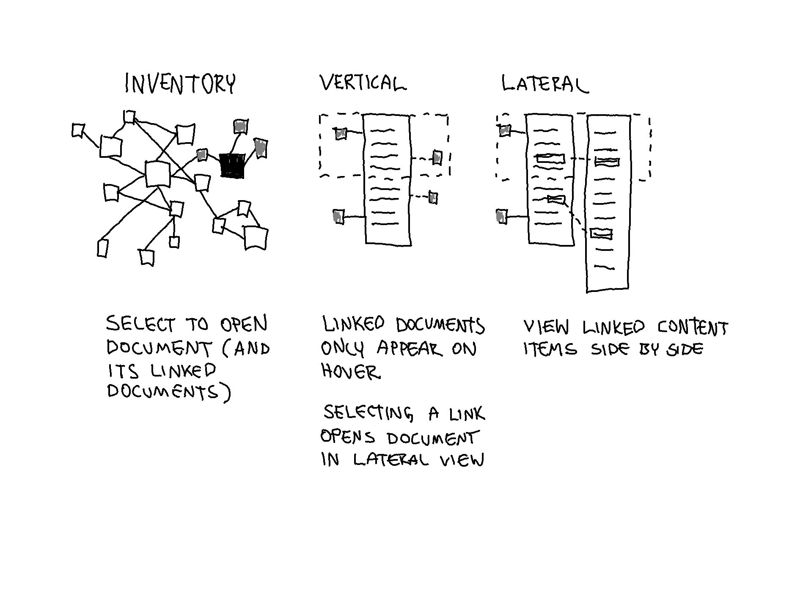
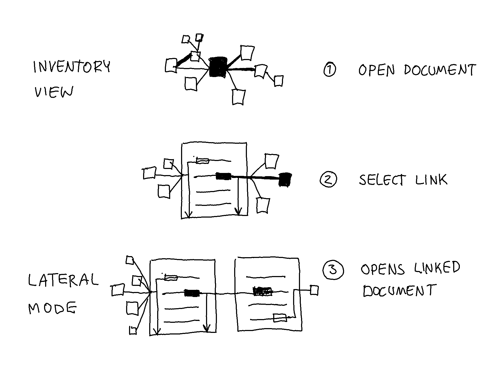
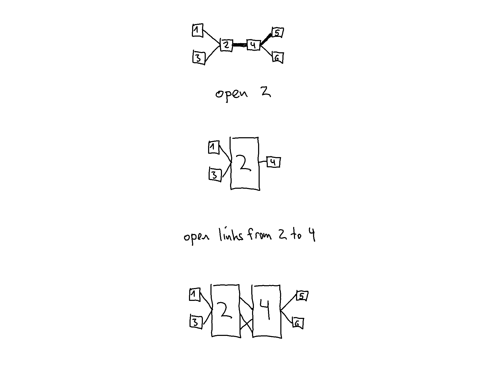
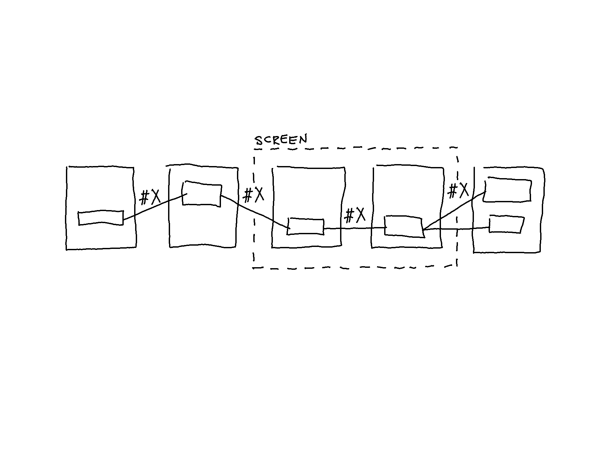

Prototype: How to Switch View Modes (Round 1)
Alterations and additions:
- Stack View is abandoned due to being visually incoherent and overwhelming.
- All view modes are now 2D.
- Labels can be attached to links (called taglinks)
While in Inventory View, selecting a node opens a document. Selecting another node will close the already-open document and open the other. There are two versions of how this might look and work.1
From Inventory View to Lateral Mode
Version 1

In the image above, the linked documents are always visible and join in the middle of the open document.
Version 2
The image below shows an alternate version in which the linked documents are only visible when hovering on a link in the open document (called Vertical View).

In both versions, if a link is selected within an open document, the corresponding document is opened, and the linked content items align (in Lateral Mode).

Open/Close Mechanism
While in Lateral Mode, if another link within one of the two open documents is selected, the other document closes, and the corresponding document opens. This open/close mechanism allows traveling by links while retaining one document as the main document. The main document is always the document from which a link is selected. In the image below, the open/close mechanism is shown.

Only the first-level linked nodes of an open document are visible in Lateral Mode. As indicated in the last step in the image above, closing a document will hide its linked nodes unless linked to one of the open documents.
Lateral Mode (as in the lateral reading strategy) enables checking the original context of a transcluded content item through deliberate action. Using taglinks makes it possible to filter which link types should be shown/hidden. This means traveling by a link path is possible according to a selected tag (e.g., #comment, #elaboration, #definition).

Demo Video
In version 1, the neighboring documents are always shown, whereas in version 2, hovering on a link shows documents as nodes on the side.
Version 1
Version 2
Reflection
In version 2, hovering on a link to show (documents represented as) nodes in Vertical Mode is not particularly useful since the size is only informative when seen in relation to other nodes.
In the next entry, the representation of linked documents is explored further.
Discarded Attempts
Opening a Document in Inventory View
In the video below, the links are visualized as vertical lines on each side of the document. The thickness of the lines corresponds with the number of linked content items. One of the drawbacks is that too much information is visualized simultaneously.
The video below demonstrates a slow transition from Inventory View to Vertical Mode. The question here is, what is the best way to animate a link within an open document to a closed document? In this example, hovering on a link extends the line to the content item within the open document, and the closed document (node) scales up. A drawback is that the scaling effect does not immediately capture attention.
Attempts at Visualizing Opening a Document in Vertical Mode
Once in Vertical Mode, the selected link opens the corresponding document. The question is how the linked content objects should interact. In this example, upon opening a document by selecting a link, the linked content objects align, and the links fade out. The alignment of the content items may suffice.
Endnotes
This is similar to when selecting a website URL from the bookmarks library in a browser results in replacing the currently open webpage. It is possible to open a new browser tab. However, the difference here is that the documents can be opened in the same window, and the connections are visual links. ↩